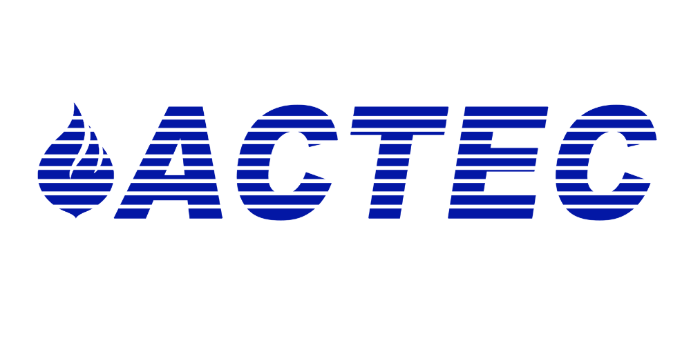

|  |
History On the year 2002, a group of educators, businessmen and concerned citizens were |
|
MissionTo produce world-class Professionals in their field of studies |
VisionTo become the Asia’s center of education equipped with Filipino values |
PhilosophyThe sensible, affordable high quality ACTEC education is based on; |
Organizational Chart
Central Office
Caloocan Campus
Apalit Campus
We also believe that a noble Filipino should possess the following K attitude
- KATAPATAN (Loyalty) – cheerful, creative and loving
- KASIPAGAN (Industry) – has discipline from within one’s self
- KALIDAD (Quality) – confident and believes in one’s capacity
- KARUNUNGAN (Intellect) – continues to strive for knowledge and research
- KAMPEON (Champion) – one of the kind! Never gives up and never surrenders